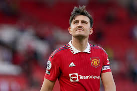
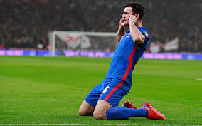
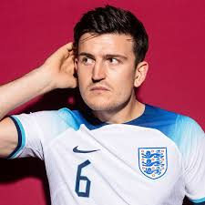

Harry Mgauire grew up in a village called Mosborough. Mosborough is near Sheffield, South Yorkshire, England. He had two brothers Joe and Laurence they would spend there younger years play football and going to school
His love for football came from his family because his dad was a big football fan and the would regularly play football in his backyard. He also got scouted a young age to play for Sheffield United when he was young.
Harry Maguire has accomplished many things though his career some of the things he has accomplished is that he won the EFL with Manchester United he also participated in the Champions League for 3 years he also participated in ghe FIFA would cup for England for two years
 Home